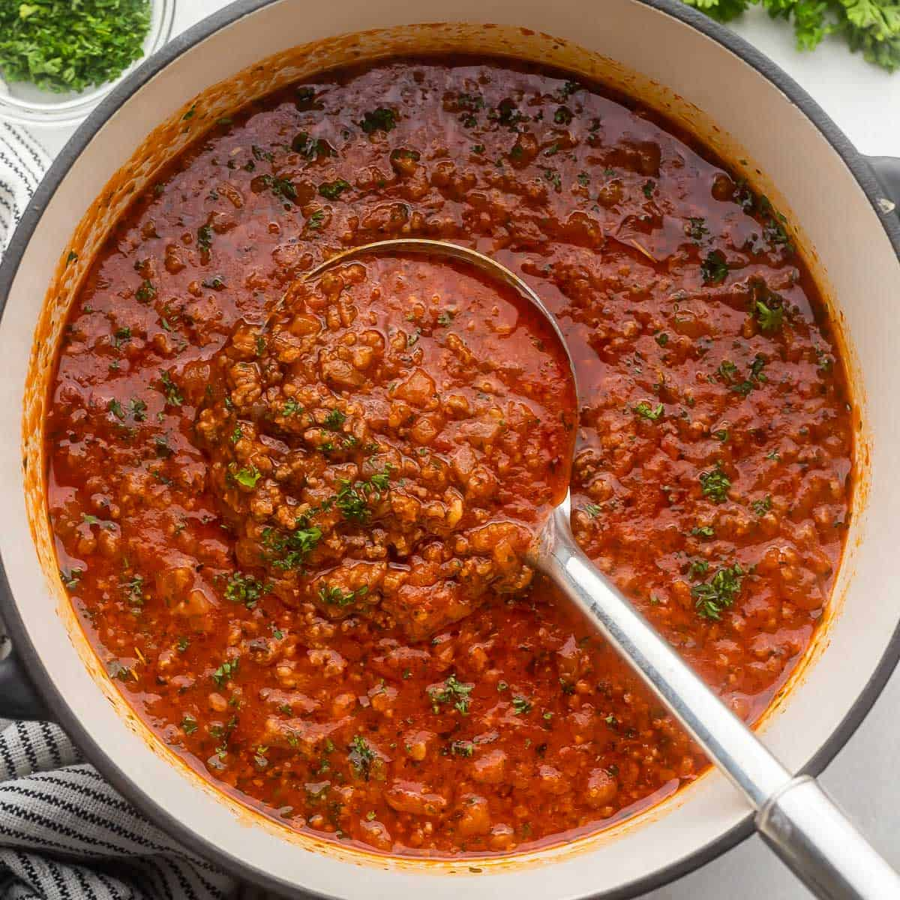

Pasta Sauce

Jump to Recipe
Background
I chose to include pasta sauce in my recipe book because it's a piece of family history that always makes me smile. My grandma was Sicillian and made her signature sauce every week on Sundays. She never called it pasta sauce though, Sicillians call it Sunday Gravy. My grandma wouldn't like me sharing this, but she got her recipe from the Sopranos cookbook. Now she made her own adjustments but she did get it from that cookbook. She said it was a legit Sicilian pasta sauce. My mom still recalls how funny she found it that this family “heirloom” was inspired by a TV show.
When my grandma shared this recipe with my mom, she also passed along the tradition. We don't make it every Sunday like she did but we will make a big batch to freeze for night where we need a quick and easy dinner. Everyone in my family loves this sauce, especially my dad because of how comforting it is to him. Everytime we have this sauce for dinner we always joke about its TV show origins. This pasta sauce, Sopranos inspired and all, is more than a dish it's a tradition.
I remember my mom making “sunday gravy” every single Sunday
Micheal DeCarmine (my dad)
Tips
- Instead of using 2 cans of peeled tomatoes, my grandma always used 2 cans of crushed tomatoes. She always did this because crushed tomatoes thicken the sauce and have a smoother texture.
- The foundation for the sauce is the tomatoes, so make sure to use Italian canned tomatoes. I don’t necessarily know why, but my grandma always said to ensure to use Italian tomatoes. She said they add a richness to the sauce that normal canned tomatoes don’t have.
- Patience is key when making pasta sauce. Letting the sauce simmer on low hear for at least 2 hours its the flavors to blend well. Stir occasionally as you go, but other then that just let the sauce sit and simmer.
Time and Servings
Prep time and Servings
| Prep time and Servings |
| Servings |
Prep Time |
Cook Time |
Total Time |
| 8 Servings |
20 Minutes |
2 and a half hours |
2 and 50 minutes |
Pasta Sauce or Sunday Gravy
| Pasta Sauce |
| Ingredients |
Quantity |
| Olive Oil |
2 tablespoons |
| Italian-style pork sausages |
1 pound |
| Garlic cloves, minced |
4 cloves |
| Tomato paste |
2 tablespoons |
| Italian peeled tomatoes |
2 cans |
| Water |
1 cup |
| Red wine |
1 cup |
| Salt and Pepper |
To taste |
| Fresh basil leaves |
10 leaves |
Directions
| Directions |
| Number of Step |
Instruction |
| #1 |
Start by heating the oil in a large heavy pot over medium heat. Place the sausages in the pot and brown on all sides. |
| #2 |
Set the sausages off to the side. |
| #3 |
Drain off most of the fat from the pot. Add the garlic and cook for about 2 minutes or until golden. |
| #4 |
Stir in the tomato paste and cook for 1 minute. |
| #5 |
Puree the tomatoes, with their juice, and pour into the pot. Add the sausages and basil and bring the sauce to a simmer. |
| #6 |
Partially cover the pot and cook over low heat, stirring occasionally, for 2 hours. If the sauce becomes too thick, add a bit of water. |
| #7 |
When the sauce has cooked for about 2 hours, take it off the heat and serve over pasta of choice. |